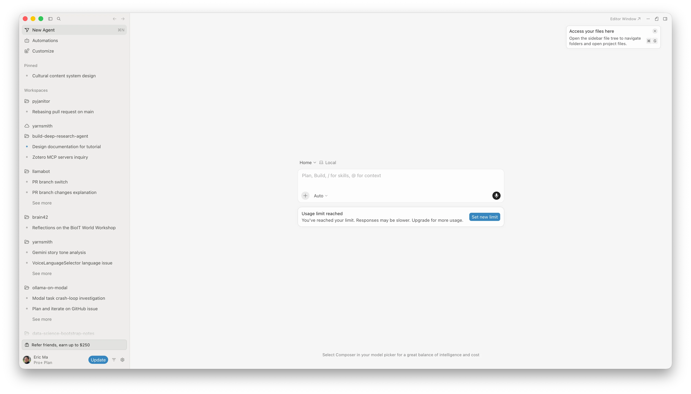
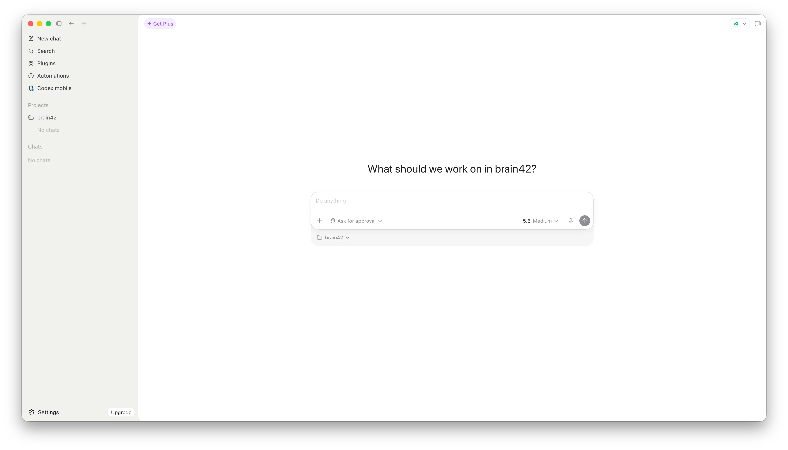
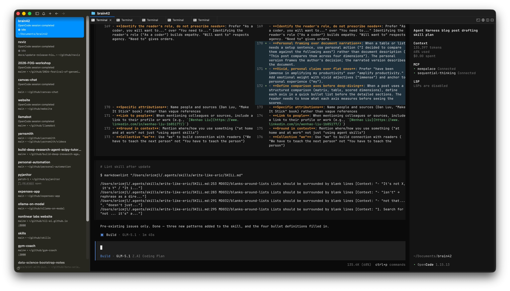
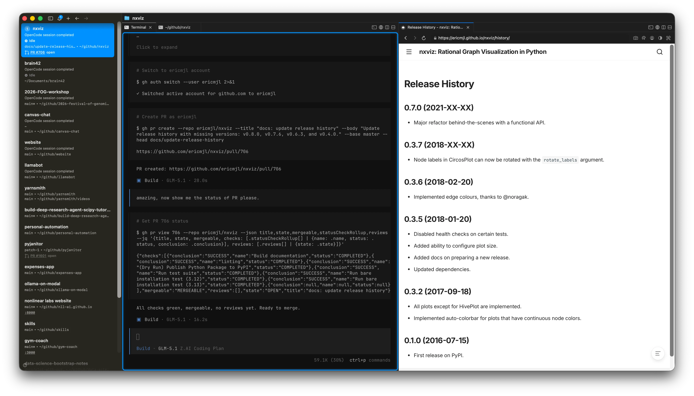
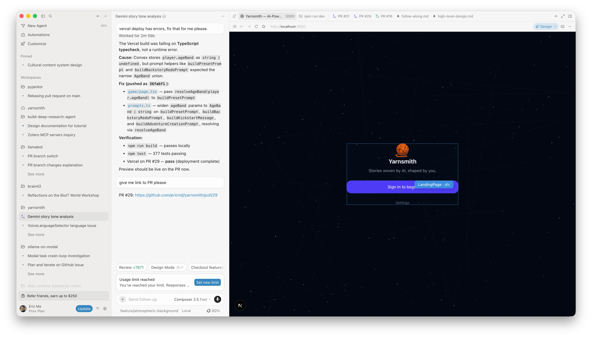

written by Eric J. Ma on 2026-06-04 | tags: automation workspace notifications browser comparison productivity review open source coding agents
In this blog post, I share my hands-on experience comparing three coding agent harnesses: Codex, cmux + OpenCode, and Cursor. I break down their features, workspace management, notification systems, automation capabilities, and open source status, highlighting what sets each apart. Curious which harness might boost your productivity or fit your workflow best? Read on to find out!
I have used three coding agent harnesses extensively over the past few months: the Codex app, cmux, and Cursor. All three have been immense in amplifying my productivity. All three share a similar layout: workspaces on the left, a coding agent in the middle, and a terminal on the right. A terminal and a browser are really all you need. I decided to write up how they compare.
I decided to compare them against the following axes:
| Feature | Codex | cmux + OpenCode |
Cursor |
|---|---|---|---|
| Workspace view | Yes | Partial | Yes |
| Notification system | Yes | Yes | Yes |
| Natural-language automations | Yes | Yes | Yes |
| Open source | Yes (Apache-2.0 CLI) | Yes | No |
| Built-in browser | Yes | Yes | Yes (element selection) |
cron or writing scripts by hand.With those defined, let's dive in.
Before we go on, I think it'll be helpful to disambiguate some terms. In the following paragraphs, when we talk about a workspace, it really refers to one project, or one folder, or one git repo. (Incidentally, this is in line with the 1:1:1:1... rule that I advocate for in the Data Science Bootstrap Notes.) Each workspace contains multiple chat threads, one per task or conversation with the agent. You might have one workspace for your web app, another for a data pipeline, a third for a side project. Within each workspace, you spin up threads as needed: one to debug a failing test, another to add a feature, another to review a pull request.
Effectively, workspaces group related work, while threads keep individual tasks isolated. As a coder, you will want to see all of this at a glance, switch between threads, and know which ones are active. Without workspaces, you are stuck juggling unrelated conversations in a flat list, constantly losing context when you switch tasks.
Codex and Cursor both handle this well. You can see a list of workspaces on the left sidebar, expand into threads within each one, and pick up where you left off. Workspaces group your projects, threads track your conversations. This two-level model, workspaces plus threads, is the right visual abstraction for agent harnesses. Cursor's UI looks like the following:

On the other hand Codex's UI looks like the following:

The commonality is that workspaces (i.e. projects) are on the left, and I can quickly switch between them.
cmux provides workspace-level tabs. When paired with OpenCode, threads live either as individual tabs within a cmux workspace (more visually obvious) or as sessions within OpenCode itself (less visually obvious, since they are not visually separated). Visually, it looks like this:

Workspaces tell you what is running. Notifications tell you when something finishes or needs attention.
Codex and Cursor both show clear indicators: a dot, a badge, or a color change on the workspace tab when an agent completes a task. You can glance at the sidebar and know what is done without scrolling through tabs.
cmux has notification features: blue rings on tabs and a sidebar notification panel. When I first started using it, notifications were not yet exposed. I submitted a pull request to a fork that was working on them, and the feature has since shipped in cmux. You can see at a glance which tasks have finished.
cmux supports multiple agents including OpenCode, with hooks for session restore and notification wiring. Without notifications, you have to manually scroll through tabs and windows to check on background tasks, which defeats the purpose of multitasking. Notifications are only the second layer. The third piece is automation.
Automations are where things get exciting. All three harnesses let you set up recurring tasks, but they differ in how you create them and how you manage them.
Codex allows you to create automations using natural language from within a workspace. You can tell it: "Set up an automation that checks GitHub every five minutes for a deployment to finish, and then delete the automation when it is done." These ephemeral automations are self-cleaning. You describe the task, tell it to shut itself down when complete, and Codex handles the rest.
Cursor supports similar automation workflows. You can configure recurring tasks and let them run in the background.
The OpenCode ecosystem has scheduling capabilities through plugins and community tools. You configure automations using natural language, and the plugin translates that into a scheduled task. The downside is that there is no unified user interface for viewing or managing these automations yet. You can set them up, but you cannot easily see what is running (yet). That is another gap worth noting, but knowing the open source world, it'll get better!
All three come with a built-in browser, which is a big deal if you are building web apps. You can see your app running alongside the agent, iterate on changes, and verify results without leaving the harness.

Cursor is the standout here. It lets you select individual DOM elements and add them directly into the context window. When you are building a web app and want the agent to focus on a specific component, you can point at it and say "fix this" without having to describe where it is. That kind of selective context control makes a real difference for front-end work.

OpenCode, cmux, and the Codex CLI (Apache-2.0) are open source. Cursor is proprietary. The Codex desktop app builds on the open-source CLI but is itself a closed product.
This matters more to some people than others. I grew up in the open-source world during grad school, and I gravitate toward open tools. With open-source tools, if something annoys you, you can fix it yourself. In the age of agents, fixing tool limitations is more a matter of imagination than skill.
That said, I am not going to be pushy about open source here. It is a personal preference; use what works for you.
All three harnesses I've gone through here are pretty capable. I obviously did not cover Claude Code, it's well-known by now; these are just the three that I've used. They're all pretty capable; once set up properly, they handle roughly the same range of tasks.
For me, the deciding factors are practical. If your company mandates a specific tool, use that at work. Then pick a different one for home. Visual separation between work and home environments matters more than you might think. I burned out in April partly because I was using cmux with OpenCode at both work and home -- the same interface, even on different laptops, with no visual disconnect. Effectively, my brain never left the office.
Using different tools at work and at home has a bonus side effect: you avoid muscle-memory lock-in to a single vendor. You stay flexible.
Cost is another factor worth considering. If cost is a factor, OpenCode plus cmux with open-weight models through providers like OpenRouter can be significantly cheaper than subscription-based options. The free tier on some model providers goes a long way.
If you're looking for counsel on what to pick, this is what I would say: pick one, use it for a few weeks to build real familiarity, then try another. Give yourself enough time with each one to form an honest opinion. These tools are evolving fast, and the landscape will look different six months from now! Only by trying things out can you know what suits you best.
@article{
ericmjl-2026-exploring-agent-harnesses,
author = {Eric J. Ma},
title = {Exploring Agent Harnesses - A Comparative Analysis of Codex, CMux, and Cursor},
year = {2026},
month = {06},
day = {04},
howpublished = {\url{https://ericmjl.github.io}},
journal = {Eric J. Ma's Blog},
url = {https://ericmjl.github.io/blog/2026/6/4/exploring-agent-harnesses},
}
I send out a newsletter with tips and tools for data scientists. Come check it out at Substack.
If you would like to sponsor the coffee that goes into making my posts, please consider GitHub Sponsors!